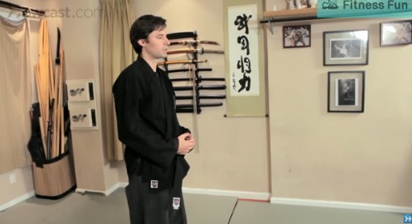
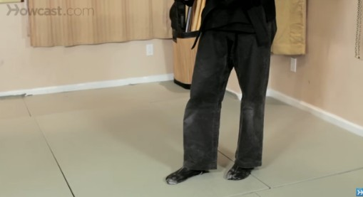
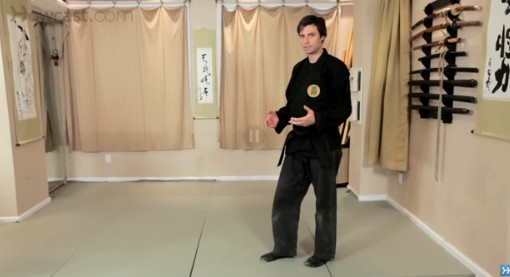
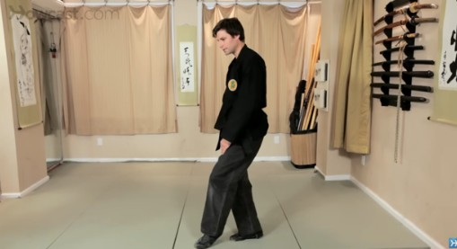
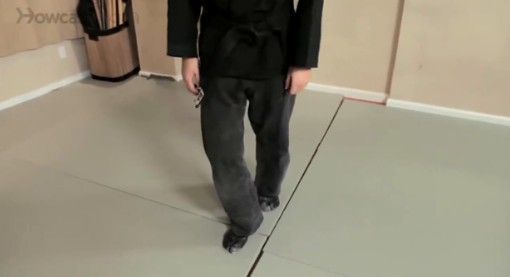

Q
Which of the following items is not hanging on the walls?
What is the primary focus of this video?





4 moments 1 frame
uniform sampling
B. Curtains
A. how to dance
LENS
A. Mirrors
B. how to walk
Video-MME accuracy
Qwen2.5-VL-7B · 8 frames
uniform
53.3
LENS
60.7
+7.4
zoom in for details,
zoom out for context